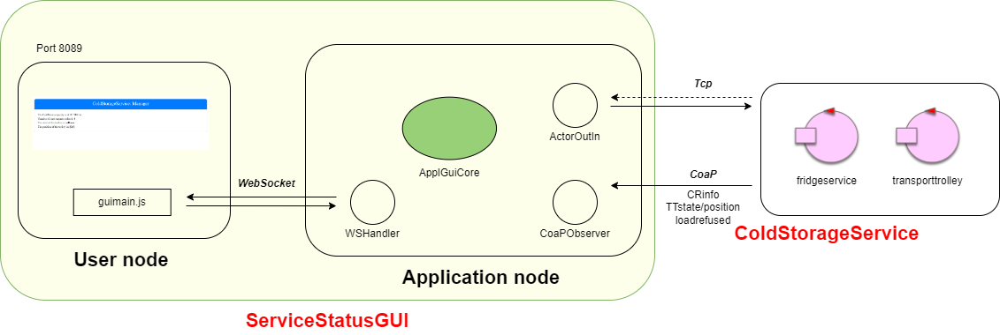

Introduzione
Nello SPRINT3 abbiamo affrontato i requisiti della ServiceAccessGUI, andando a realizzare un applicazione web che interagisce con il ColdStorageService seguendo il modello qui sotto:L'architettura dell'applicazione è diventata:
{kind=link}
In questo sprint andrò ad affrontare il problema della realizzazione della ServiceStatusGUI.
{kind=link}
Requisiti
Nello SPRINT4 ci concentriamo solo sui seguenti requisiti:
a ServiceStatusGUI that allows a Service-manager (an human being) to
supervises the state of the service.
In questa fase ci interessano solo le seguenti user story:
A Service-manager migtht use the ServiceStatusGUI to see:
the current state of the transport trolley and it position in the room;
the current weigth of the material stored in the ColdRoom;
the number of store-requests rejected since the start of the service.
Analisi del problema
ServiceStatusGUI come Applicazione Web
Si è deciso di realizzare la ServiceStatusGUI come applicazione web dotata di interfaccia grafica e che scambia messaggi con il ColdStorageService per ottenere
informazioni sullo stato del servizio.
In quanto ad analisi del problema non c'è molto da aggiungere, dato che la costruzione di questo componente è equivalente alla realizzazione della ServiceAccessGUI.
Viene quindi realizzata utilizzando come base il progetto ServiceFacade24.
L'unico problema è che al momento i plugin qak non permettono la creazione di facade multiple per un unico servizio, non ho quindi potuto "agganciare" l'applicazione web della serviceaccessgui
al modello qak del coldstorageservice. Per risolvere questo problema, ho utilizzato l'applicazione web come se fosse "stand-alone", andandola ad attivare manualmente.
L'unica altra differenza sostanziale con l'applicazione della serviceaccessgui è la modifica del componente FacadeBuilder per permettergli di istanziare
due oggetti della classe CoaPObserver, in quanto ho la necessità di osservare tutti e due gli attori del servizio.
Aprendo un browser sulla porta 8089 dell'indirizzo del servizio si viene presentati alla seguente interfaccia:
tramite la quale è possibile visualizzare il carico corrente della ColdRoom, lo stato e la posizione del trolley, e il numero di depositRequests rifiutate.
{kind=link}
Cambiamenti al ColdStorageService
Nel contesto del ColdStorageService l'unica modifica da dover effettuare è quella di rendere la posizione del TransportTrolley disponibile verso
l'esterno. Per fare questo ho semplicemente aggiunto un updateResource alla fine di ogni movimento del trolley, per inviare la posizione corrente a chi sta osservando.
Architettura logica
L'architettura logica del ColdStorageService ricavata nello SPRINT4 è rimasta invariata rispetto allo sprint3:
Mentre l'interazione completa della ServiceStatusGUI con il servizio è mostrata qui sotto:

{kind=link}
Progettazione - ServiceStatusGUI
In questa sezione sono riportati i dettagli di realizzazione più importanti della ServiceStatusGUI come applicazione web.ApplicationGUICore
//Chiamato da CoapObserver
public void handleMsgFromActor(String msg, String requestId) {
//CommUtils.outcyan("AGC | hanldeMsgFromActor " + msg + " requestId=" + requestId) ;
if (Objects.equals(getSender(msg), "transporttrolley")){ //handle messages from transport trolley
updateMsg(msg);
}
if (Objects.equals(getPayload(msg).get(0), "currentlyStored")) { //handle the currentlyStored message
updateMsg(msg);
}
if (Objects.equals(getPayload(msg).get(0), "refusingRequest")){ //handle the refusingRequest message
refusedRequests +=1;
updateMsg("fridgeservice(refusingRequest," + refusedRequests +")");
}
}
- Nella funzione habdleMsgFromActor si vanno a gestire i vari messaggi che arrivano dall'osservatore sulla connessione CoaP. Gli unici messaggi che vengono fatti passare alla updateMsg sono quelli del trasporttrolley e il messaggio currentlystored del fridgeservice. Per quanto riguarda invece il messaggio refusingRequest del fridgeservice, si incrementa la variabile refusedRequests e si manda il messaggio alla updateMsg con il valore della variabile aggiunto (in modo che quando arriva al client tramite connessione WS può sapere quante richieste sono state rifiutate).
guimain.js
function showMsg(message) {
console.log("received: " + message)
switch (getSender(message)) {
case "fridgeservice" :
if (getPayload(message)[0] == "refusingRequest")
refusedText.innerText = getPayload(message)[1];
else
capacityText.innerText = getPayload(message)[1];
break;
case "transporttrolley" :
if (getPayload(message)[0] == "position")
positionText.innerText = "[" + getPayload(message)[1] + "," + getPayload(message)[2] + "]";
else
stateText.innerText = getPayload(message)[0];
break;
default :
console.log("Not handled message");
}
}
- showMsg è la callback chiamata quando arriva un messaggio sulla connessione WS. In base al messaggio arrivato si scrive qualcosa nella textarea dell'html.
FacadeBuilder
public void create(){
.
.
.
if( config != null ) {
String qakSysHost = ApplSystemInfo.qakSysHost;
String ctxportStr = ApplSystemInfo.ctxportStr;
String qakSysCtx = ApplSystemInfo.qakSysCtx;
String applActorName = ApplSystemInfo.applActorName;
CoapObserver obs = new CoapObserver(guiCore, applActorName);
CoapConnection coapConn = new CoapConnection(qakSysHost + ":" + ctxportStr,
qakSysCtx + "/" + applActorName);
CommUtils.outblue("FacadeBuilder | Stabilita coapConn : " + coapConn);
coapConn.observeResource(obs);
//for fridgeservice
CoapObserver obs2 = new CoapObserver(guiCore, "fridgeservice");
CoapConnection coapConn2 = new CoapConnection(qakSysHost + ":" + ctxportStr,
qakSysCtx + "/" + "fridgeservice");
CommUtils.outblue("FacadeBuilder | Stabilita coapConn : " + coapConn2);
coapConn2.observeResource(obs2);
//}
- In create() si vanno a creare due CoapConnection al posto di una, per osservare tutti e due i componenti del servizio.
Piani di testing
Al fine di testare il corretto funzionamento del sistema, sono stati introdotti i seguenti piani di testing:- TestStatusWorking: Si fa partire una richiesta e si eseguono le normali operazioni relative all'accettazione della richiesta e del biglietto, o il rifiuto di una richiesta. Nel mentre ciò accade si controlla nella ServiceStatusGUI che tutti i valori riportati siano corretti.